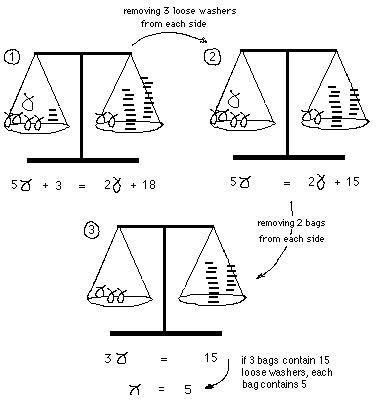
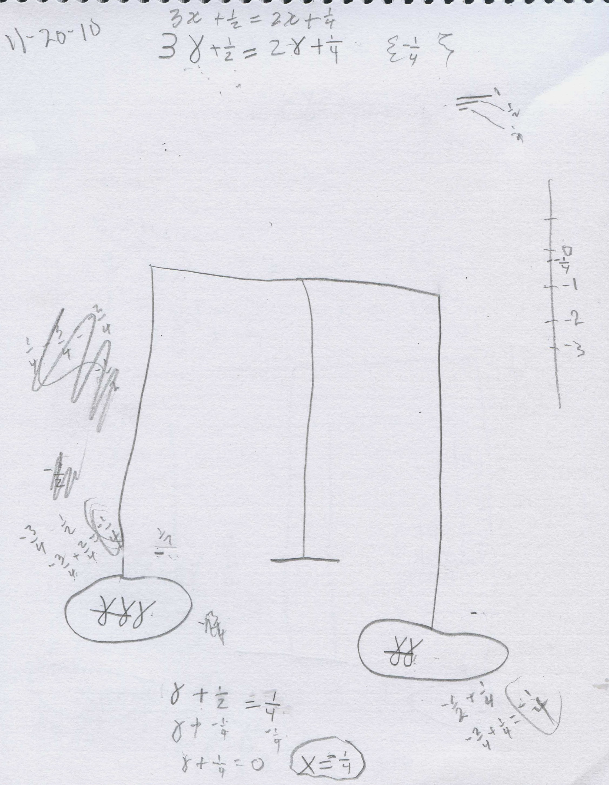
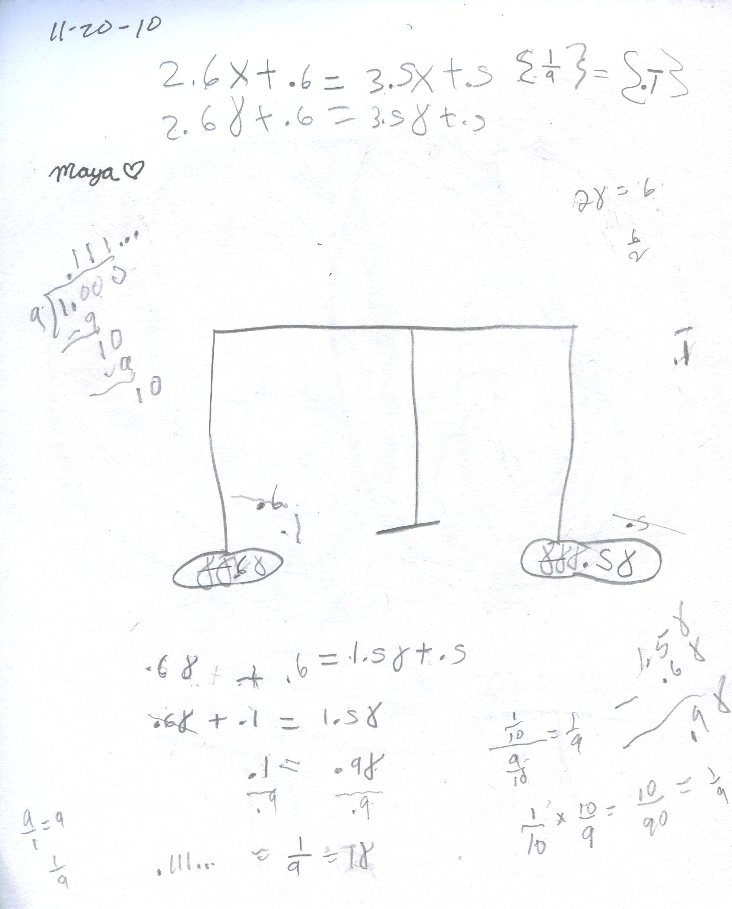

Using balance pictures to solve equations/chapter 8
A washer is what you put in a faucett to keep it from leaking, a flat rubber, penny-shaped thing with a hole in it. In the picture below, we solve 5x + 3 = 2x + 18. The x becomes a bag of washers, and we are trying to figure out how many washers are in each bag. We make a balance scale. On the left is 5 bags and 3 loose washers, and on the right side is 2 bags and 18 loose washers. The scale is balanced to begin with. The idea is to make the problem simpler by taking off bags from both sides or loose ones from both sides, the same from both sides, to keep the scale balanced an find out how many washers are in each bag.

Make up some equations like the
one above, and solve them by making a balance picture for each.
Maya, age 9, makes up and solves linear equations with fractions and decimals, using balance pictures
Don had Maya solve a linear equation with x's on both sides, using balance pictures, like 5x+3=2x+18 above. Each x was represented by a bag of washers and the dash by a loose washer; the object was to figue out how many loose washers were in each bag. Don had a rubber washer handy to make sure she knew what we were using. He made sure Maya knew that to keep the balance balanced, she must take the same number of loose washers or bags of washers from both sides. Maya was able to do this easily:
Don asked Maya to make up an equation like this; she asked if she could use fractions! Of course Don said that would be fine. She made up this one:
3x + 1/2 = 2x + 1/4 Neat!

Maya put 3 bags of washers and 1/2 of a washer on the left side, balancing 2 bags and 1/4 of a washer on the right side. She took off 2 bags of washers from each side, keeping the scale balanced. She had one bag and 1/2 loose one on the left side and 1/4 of a loose one on the right side. Then she took 1/4 of a washer from each side (she put a bag there, but paid no attention to it). Maya ended with one bag and 1/4 of a washer on the left side, and zero on the right side. Then they discussed the situation, and Maya tried -1/2 of a washer for what was in the bag. She realized that -1/2 + 1/4 would equal -1/4, not zero. Maya then said the bag must contain -1/4 washers which when added to 1/4 would equal zero! So the answer to the equation was x = -1/4
Then Maya asked if she could make up an equation with decimals. She made up this one:
2.6x + .6 = 3.5x + .5

Maya took 2 bags off each side, obtaining
.6 bags + .6 loose ones = 1.5 bags + .5 loose ones.
She then took off .5 loose ones from each side, obtaining
.6 bags + .1 loose one = 1.5 bags
She then took off .6 bags from both sides, obtaining
.1 = .9 bags
Maya then divided both sides by .9, to get
.1/.9 = .9 Bags/.9
They talked about these divisions- .1/.9 = 1/9 (multiply top and bottom by 10 or dividing 1/10 by 9/10 to get 1/9), and .9 bags divided by .9 = 1 bag) obtaining
1/9 = 1 bag (each bag contains 1/9 of a washer)
So the answer is x=1/9 = 0.111... , or in the wiggly brackets she put {1/9} or {0.1}
Fine work, Maya!